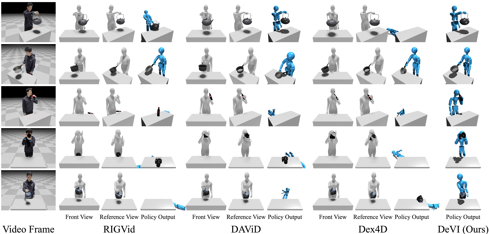
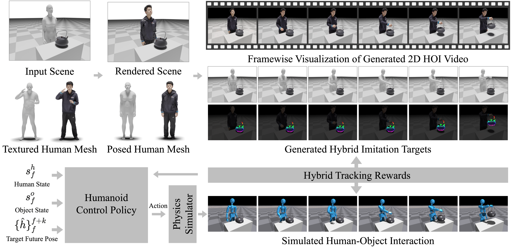

Hybrid Imitation Target

Recent advances in video generative models enable the synthesis of realistic Human-Object Interaction (HOI) videos across diverse scenarios and object categories, including complex dexterous manipulations that are difficult to capture using motion capture systems. While these synthetic videos offer rich knowledge of how people grasp and use objects, inaccurate object pose estimates and severe hand-object misalignment make them difficult to use for physics-based character control. We present DeVI (Dexterous Video Imitation), a novel framework that learns physics-based character control for dexterous HOI by imitating text-conditioned synthetic videos. To train a control policy from these videos, we introduce hybrid imitation targets that combine reconstructed 3D human motion with tracked 2D object trajectories. This formulation avoids explicit 3D object motion reconstruction that remains unreliable for dexterous interactions in synthetic videos. Additionally, our Visual HOI Alignment corrects misalignment of the human reference with the generated video and the initial object geometry, making the reference suitable for physical interaction with the object. Extensive experiments on synthetic video imitation show that DeVI's hybrid representation is more effective than those used by the baselines. Even when 3D HOI motion-capture data are provided as references, DeVI outperforms the baselines in imitating dexterous interactions. We further highlight the advantages of synthetic video imitation by showing text-controlled functional manipulation, target-aware interactions, and articulated object manipulation without requiring motion-capture demonstrations.

Our method consists of three parts; (1) 2D HOI Video Generation, (2) Extracting Hybrid Imitation Target from the Video, and (3) Learning Humanoid Control Policy. First, we generate 2D HOI Video from the rendered 3D scene using the pre-trained image-to-video diffusion model. Then, the Hybrid Imitation Target which includes 3D human reference and 2D object reference is extracted from the video. Using the hybrid imitation target, we learn humanoid control policy imitating the dexterous HOI video via our hybrid tracking reward.

Beyond the Table-top Scenarios
DeVI on Reconstructed Scene
@misc{devi,
title={DeVI: Physics-based Dexterous Human-Object Interaction via Synthetic Video Imitation},
author={Hyeonwoo Kim and Jeonghwan Kim and Kyungwon Cho and Hanbyul Joo},
year={2026},
eprint={2604.20841},
archivePrefix={arXiv},
primaryClass={cs.CV},
url={https://arxiv.org/abs/2604.20841},
}